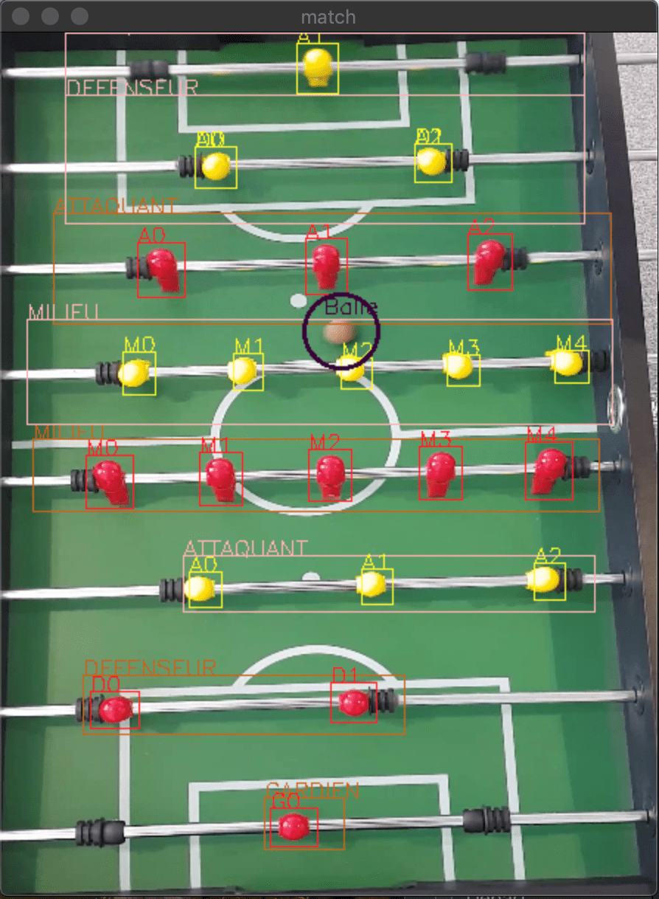

Exemples d'utilisation d'OpenCv

Les logiciels d’arbitrage vidéo se basent bien souvent sur OpenCV pour reconnaître les joueurs, déterminer leur équipe et détecter la balle sur le terrain, en se basant sur les couleurs de chaque élément.

OpenCV est à la base du logiciel DeepFake, permettant de changer le visage d’une personne par une autre sur une vidéo, qui a fait beaucoup parler de lui ces derniers temps.
Ici, OpenCV est utilisé pour reconnaître un visage sur une vidéo et le remplacer. Via de nombreuses photos de Sylvester Stallone, on entraîne une IA qui sera capable de remplacer le visage (ici celui de Arnold Schwarzenegger) détecté par OpenCV par celui souhaité.
Consulter la documentation de OpenCv ici : https://docs.opencv.org/4.1.1/index.html